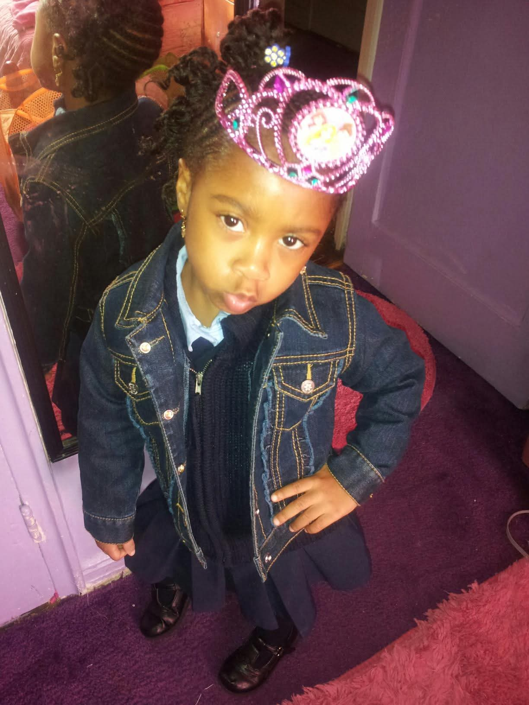
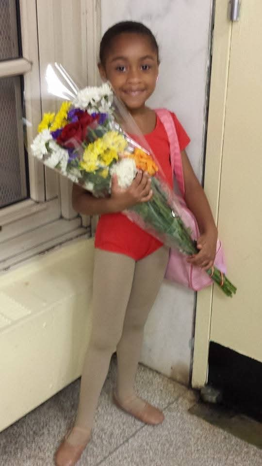

Before I was born I was expected to be a triplet but not to far along my mother lost the two of my siblings and I was that lucky 1 that got to live. I was born April 9'th at around 4:00 Am in Methodist Hospital, I was infact not supposed to be born April 9'th but May 5'th. That's not terrible but of course it was not good. When I was younger I'd jump between the US and Trinidad and Tobago, and being a first generation American trust I was there a lot. I even learned to walk down there! Since I got into high school I have only been once but hopefully I can go before I go to college and become broke lol.
I love dance and I started dance when I was 3 (was I any good? Heck nah). I started with West African and made my way up to to different forms of dance when I was like 6. Then I became a competition dancer when I turned 8. Fun fact when I was 6 I also did gymnastics as well and wanted to be competitive gymnast, which I then quit but I was terrible so that explains why I can't do flips or anything cool lol. But it's ok because I would never regret being a compeition dancer no matter how tired and injured I am.
